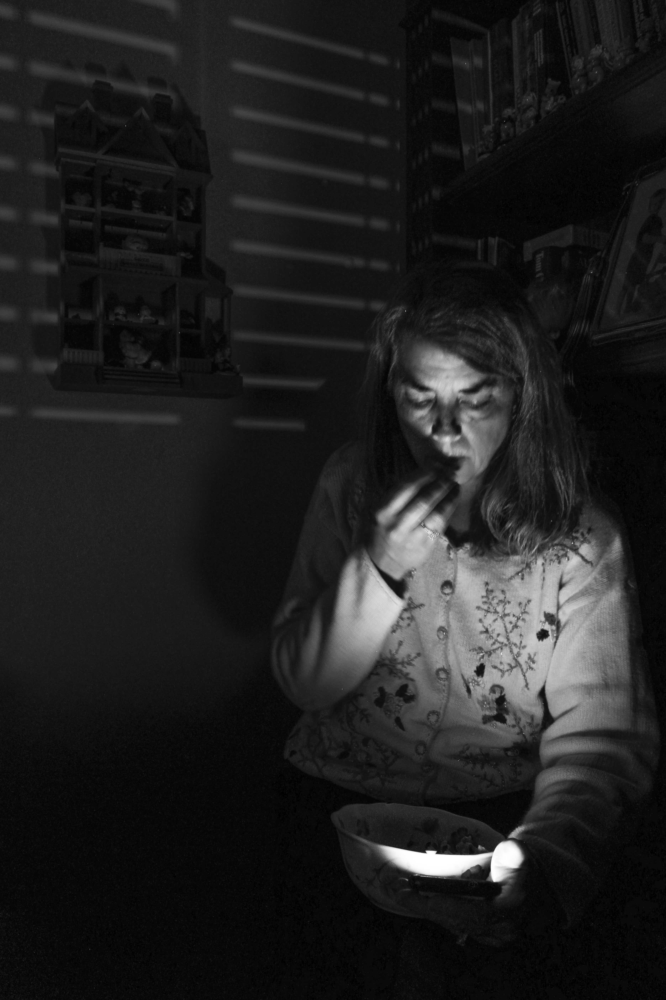
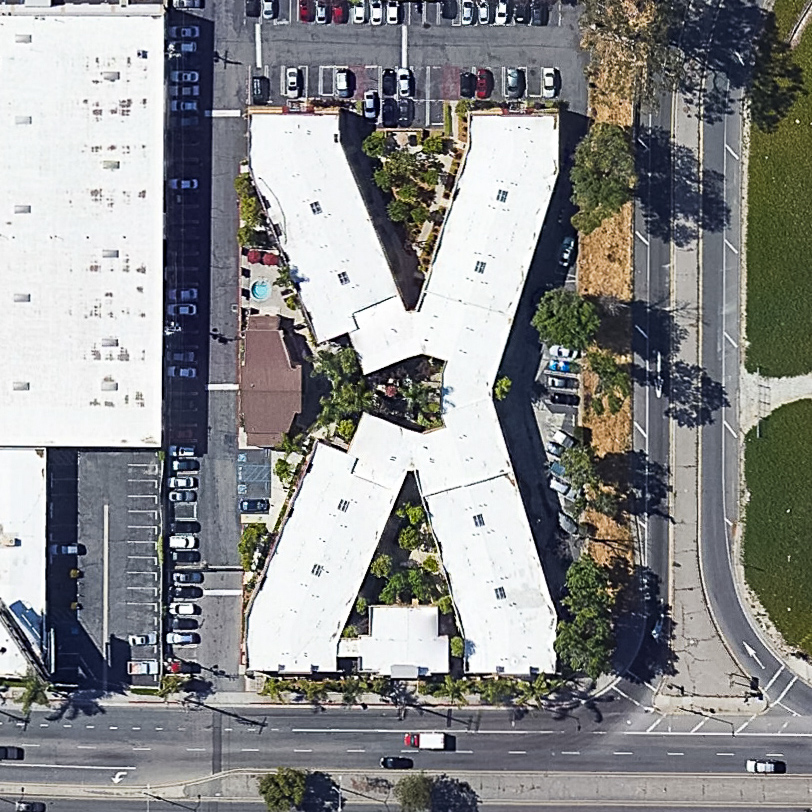

karalynnbressler
allprojects
about
dreamworksportfolio
Hi all! My name is Kara, and I'm currently a lighting TD on Croods 2. Last year, I graduated college from computer science and visual arts departments, having focused on computer graphics theory and graphic design. Before college, I spent a lot of time with photography and oil paint. During quarantine, I've been learning about color theory and optics.
On this page I've included work most closely linked with elements of cinematography. To see a wider range of portfolio work, visit my general portfolio.
several things I've done
public visual journal



Lighting Research
continual observation and photographic documentation of interesting light encounters including caustics patterns, light shards, and blocking geometry


